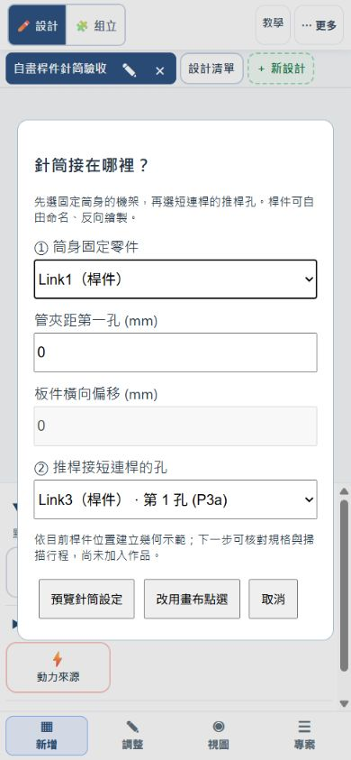

針筒推直線，連桿把它變成動作
先看筒身固定在哪，再找可轉動的螺絲。針筒與管夾外形參考老師提供的 Fusion 模型，採簡化側視板件；20 mm 是教學區間，尚未依實際針筒校正。
第一課：固定針筒單臂 H01
目標：指出筒身不動、推桿走直線、活動臂走圓弧，找出連接兩者的短連桿。
開啟 H01 單臂- 找出固定管夾、推桿孔、短連桿兩端和活動臂主軸。管夾螺絲鎖固；短連桿兩端的螺絲保留轉動。
- 拖動伸出量 0–20 mm，再播放一輪；觀察推桿直線移動如何讓單臂抬起。
- 按「針筒設定」，只改活動臂長 60／80／100 mm，先預測，再掃描候選全行程，通過才確認套用。
- 自己畫一次：依下方「從三根桿開始」建立機架、擺臂與短連桿，再用零件清單安裝針筒；不必先載入另一份範例。
從三根桿開始：自己建立 H01 同款機構
在目前作品按「＋ 新設計」，保留原範例作比較。手機先選「新增」，點「連桿」畫兩個端點；需要編輯時切「調整」。這次把每根桿當成有孔的積木，名稱和畫的方向不限。
- 機架：從左下往右上畫一根斜桿，分別點兩端孔，按「設為機架點」。兩孔都固定，這根桿才是不動的基準。
- 擺臂：從機架右上孔開始，吸附同一個孔，往右下畫活動臂。不要把新畫的末端固定。參考圖的機架約 208 mm、活動臂 144 mm；可點桿身改孔距。
- 短連桿：在機架左下孔的右方留出約 100 mm 筒身空間，畫第一個自由孔，再接到活動臂末端。兩根桿要共用同一個末端孔；線條碰在一起不等於連上。參考圖短連桿約 173 mm，尺寸是自畫練習，不是實物加工規格。
- 裝針筒：新增 → 動力來源 →「10cc液壓針筒（管夾固定）」。選機架，管夾距第一孔填 0；再選短連桿沒有接擺臂的端孔。若從另一方向畫機架，改填機架孔距，把管夾放在另一端。清單可分清重疊零件，也保留「改用畫布點選」。
- 先試再放：按「預覽針筒設定 → 掃描候選全行程」，通過再確認。初始軸向與安裝距離依你畫的位置推算，0–20 mm 為幾何示範；有無解位置就取消，調整桿長或管夾位置再試。若提示短連桿未接到擺臂，先查共用孔，不要靠移動畫面硬湊。
- 完成核對：推桿走直線，擺臂繞機架孔轉；只把臂長增加 8 mm，掃描、套用再按「復原」，應回原尺寸。保存 JSON 後重開，再推到行程兩端。最後說出機架、輸入與輸出各是什麼。


連回第 2 單元：針筒推短連桿帶動擺臂，就是「曲柄滑塊」反過來用：第 2 單元由轉動的曲柄帶動滑塊走直線，這裡由走直線的推桿（滑塊）推著連桿，讓轉動的臂跟著轉。直線的一側出力，轉動的一側跟隨。

過關：三組臂長均能往返，交一段附行程與角度的動畫，說明哪裡固定、哪裡轉動。20 mm 是教學區間，不代表實物行程；擺角也不代表承重。舊 H01 作品仍保留原兩端鉸接，請由上方按鈕載入新版。
第二課：固定筒身抬臂 H02
目標：保持臂端距主軸 250 mm，只換驅動孔位，比較相同 0–20 mm 伸出量造成的臂角變化，並讀「每推 1 mm」的轉角。250 mm 臂端是本課改製設定；孔距與短連桿取自模型。
開啟 H02 抬臂- 找出管夾、片狀推桿孔、短連桿及長臂轉軸。先猜：推桿走直線，臂端也會走直線嗎？
- 播放一次，觀察臂端走圓弧。按「針筒設定 → 掃描候選全行程」，確認 0–20 mm 可解。
- 伸出量調到 10 mm，讀針筒列上的「每推 1 mm：臂轉 x.xx°、臂端移 y.y mm」。原 172.422 mm 孔約每推 1 mm 轉 0.32°、臂端移 1.4 mm。
- 保持其他條件不變，選「孔位 145.892 mm」，掃描後「確認套用」，伸出量同樣放 10 mm 再讀一次：約每推 1 mm 只轉 0.09°，臂端約移 0.4 mm。再把伸出量拉到 16 mm 附近，臂角會停住並折返。
- 試選 198.958 mm：目前配置不可達，應出現錯誤。按取消，確認作品沒有被改壞。

想一想（力和距離的交換）：172.422 mm 孔每推 1 mm 轉得多，臂舉得高、動得快；145.892 mm 孔每推 1 mm 轉得少，同樣推 20 mm 舉得低，但每一點轉角都要推較多，推起來較省力，也就是「舉得重」。要用力還是要距離，是一種交換。決定每 mm 轉多少的，是力臂（支點到連桿所在直線的垂直距離），不是孔到支點的距離；所以孔離支點較近，不一定轉得比較多。145.892 mm 孔的連桿在行程中接近死點，臂角在 0–20 mm 內會折返，每 mm 轉角降到接近 0（約 16 mm 處）。讀數為本模型在 10 mm 的幾何結果，非實物測量。
過關：兩個有效孔位均完成往返，影片附孔距與臂角；用「每推 1 mm」的讀數說出哪個孔舉得高、哪個較省力，並說出短連桿為何需要兩端可轉。不要把轉角大小說成承重能力。
第三課：針筒夾具 H03
目標：推桿在 0–20 mm 之間往返，觀察左右交叉臂與「夾臂端孔距」。
開啟 H03 夾具- 找兩支 60 mm 短連桿、中央支點與前方一體式夾持段。
- 先猜伸出時開口如何改變，再播放，讀兩個夾臂端孔的距離。
- 點選任一夾臂：交叉段與末端夾持段應一起亮起外框。兩段為同一片板，轉動時折角與孔距保持不變。

過關：能指出兩支短連桿如何帶動兩片夾臂，並說明同一片板上的折角為何不變。三個求解點決定剛體運動，末端以造形頂點延伸，不新增自由轉軸。端孔距不是夾持面淨開口，沒有模擬抓牢或搬運物件。
第四課：旋轉底盤 H04
目標：用俯視圖看針筒怎麼讓轉盤繞垂直軸轉動，讀出「每推 1 mm」轉幾度，並說明傳動角太斜為什麼會推不動。這是 H06 三軸手臂的底盤。
開啟 H04 旋轉底盤- 這張是俯視圖：畫面是從上往下看，轉盤的中心是垂直轉軸，繞它轉的是整個底盤。找出管夾、短連桿、轉盤的曲柄銷（連桿接轉盤的孔）和轉盤上較遠的安裝點。
- 拖動伸出量 0–20 mm，轉盤轉過約 84°。針筒軸線刻意偏離轉軸一個曲柄半徑（15 mm），所以 10 mm 時連桿剛好垂直曲柄。
- 讀針筒列上的「每推 1 mm」：10 mm 附近約轉 3.8°，兩端約 5.4° 與 4.8°。曲柄半徑愈小，每 mm 轉得愈多。
- 先猜，再到「針筒設定」只改安裝孔位或連桿長，掃描全行程：連桿與曲柄愈接近一直線，轉角愈不穩，每 mm 的轉角變化愈大。

傳動角與死點：連桿與曲柄的夾角叫傳動角。90° 時推力幾乎全用來轉；夾角愈接近 0° 或 180°，連桿愈像在頂著轉軸，推了也轉不動，這就是死點，和 H02 的 145.892 mm 孔位在行程中折返是同一件事。本例全程傳動角約 52°–136°，離死點還有距離。
之後：H06 會把升降總成裝在轉盤的安裝點上，轉盤一轉，整組升降臂跟著轉。
過關：說出轉盤總轉角與 10 mm 處每推 1 mm 的轉角；說出傳動角接近死點時會發生什麼事；只改一個尺寸，掃描全行程並記錄結果。以上為幾何結果，不含摩擦、承載與水路，20 mm 為教學區間，尚未依實物校正。
第五課：升降＋夾爪，兩支針筒 H05
目標：把 H02 的升降臂和 H03 的夾爪組成一台側視機構，兩支針筒各管一個動作：一個動作一個驅動。夾爪模組裝在升降臂的工具端，臂轉它就跟著轉。
開啟 H05 升降＋夾爪- 先在設計模式看兩個分頁：「升降」是 H02，「夾爪」使用組合用的推出夾緊變體（不是目前 H03 的交叉夾臂）；各自有一支針筒，孔距與針筒行程沿用前面兩課；組合時把升降整組朝上轉 40°，讓夾爪位於中段支點上方。
- 切到「組立」。畫面上方有「升降 針筒」「夾爪 針筒」兩個切換鈕，按哪一個，下面的伸出量滑桿就推哪一支；另一支維持原位。先推升降針筒，觀察整支夾爪跟著臂轉；再切到夾爪針筒，觀察夾爪開合，臂不動。
- 順序練習：先升再夾（升降 20 mm，再夾爪 20 mm），再試先夾再升（先夾爪 20 mm，再升降 20 mm）。兩種順序最後的姿勢相同，但夾爪開口與臂角在途中的變化不同，把兩個讀數記下來。
- 按 ▶ 播放：只會讓選取的那支針筒往返，換一個切換鈕再播另一支。存檔重開後，兩支針筒各自的伸出量都會保留。
- 排動作：在組立按右上角「動作序列」。預設已排好五步：張開、降到取物位、夾緊、升起、放開；每一步選一支針筒、填目標 mm 和秒數（0.5～5 秒），可用 ▲▼ 調順序、✕ 刪除、「加一步」新增。按「驗證」確認每 0.5 mm 都能解，再按「播放」看夾爪與臂照順序動，結束會回到原來的姿勢。想改成先夾再升，就用 ▲▼ 換順序後重新驗證。按「儲存序列」會存在作品裡，重開仍在。
- 交件：按「匯出 MP4」輸出影片，畫面下方會列出每一步的針筒與目標 mm，把 MP4 當作這一課的繳交檔。
自己組一次：用自己的升降與夾爪
- 保留自己的作品，從「新增 → 加入模組（保留作品）」加入「針筒升降臂」與「針筒夾爪」。這是直接重用 H02、H03，不會取代全部分頁；已有自己畫的升降或夾爪，就用自己的設計。
- 先在各自設計分頁試動並掃描行程，回組立按「加入設計」把要用的設計加入組立清單。
- 選夾爪進行接合：承接端選升降設計的長臂板件／工具端，安裝端選夾爪的固定機架。依序選各自實際零件、面、位置；不是選整個設計的上下前後。接合預覽主要顯示板件，確認定位後回組立查看針筒外形。希望夾爪隨臂升起，就不能承接在升降底板上。
- 在預覽調整位置、旋轉與間距，讓夾爪接近長臂端且避開短連桿；確認後分別推升降與夾爪。若裝錯就拆下或復原，回到選零件再接一次。H05 是同平面疊放的參考姿態，不是所有自創作品都套同一組偏移值。
檢查重點：推升降時整個夾爪跟隨，推夾爪時升降角度不變。針筒、管夾的完整干涉、固定座、軸長與墊柱須另行核對。

過關：用兩個切換鈕做出「臂在最高、夾爪夾緊」的姿勢，說明為什麼要兩支針筒（一個動作一個驅動）、夾爪為什麼會隨臂轉，並記下兩種順序的讀數；再用動作序列排出「張開→降→夾→升→放」，驗證通過後播放並匯出 MP4 繳交。界限：這是幾何結果，針筒只用長度約束帶動機構；3D 已顯示針筒與管夾，並跟隨各模組的姿態，但只是外形參考；夾爪以疊放層與升降桿件錯開，升降與夾爪各 0、10、20 mm 的九個姿勢，組立的干涉面板都不報撞，但針筒外形、板間螺絲長度與墊柱、貼合與摩擦都未驗證，不代表實物不會碰到。接觸、夾持力、承載、水路與氣泡都未驗證；20 mm 是教學區間。動作序列只在每 0.5 mm 取樣求解，沒有物件，「夾緊」只是夾爪推到底，不代表夾得住東西。
第六課：三軸手臂 H06
目標：由下往上是「底座左右轉動 → 中段上下升降 → 頂端張合夾取」。把 H04 的轉盤、H02 的升降和 H03 的夾爪組成一支手臂：升降總成直角立在轉盤上，轉盤一轉，上面整組（升降臂和夾爪）跟著繞垂直軸轉。三支針筒各管一軸：一支轉、一支升降、一支夾。
先看三件事：底盤平放；升降臂朝上承接頂端夾爪；夾爪只負責張合。左右轉動會帶著上面兩組一起轉，上下升降只帶著夾爪升降，夾取不改變下層位置。此處升降沿擺臂圓弧，夾爪方向也隨臂改變，不是垂直滑軌或保持水平的平行四連桿。
開啟 H06 三軸手臂- 設計模式有三個分頁：「旋轉底盤」（H04，俯視）、「升降」（H02，側視，標「直角 已安裝」）、「夾爪」（H03，裝在升降臂工具端）。升降的接合是「直角安裝」：它的平面垂直立在轉盤板面上，接在轉盤三角板的一條邊（H4B 到 H4M 那條，約 69 mm，朝外）。
- 切到「組立」，畫面是 3D。上方有三個切換鈕：先推「旋轉底盤 針筒」0 到 20 mm，看整條升降臂連同夾爪繞轉盤中心轉過約 84°；升降平面的方向始終等於轉盤角度加一個固定差。
- 再推「升降 針筒」：臂端升高約 26 mm，夾爪跟著升；推「夾爪 針筒」：夾爪開合，臂不動。一次只推一支，其餘維持原位。
- 排動作：按「動作序列」，預設七步取放：轉到取物方向（轉盤 0 mm）→張開→降到取物位→夾緊→升起→轉到放置方向（轉盤 20 mm）→放開。按「驗證」確認每 0.5 mm 都能解，再「播放」，結束會回到原來的姿勢。可改成先升再轉，或多加一步，比較兩種做法的總時間。
- 想一想「為什麼升降要直角立起來」：轉盤在水平面轉，升降臂在垂直面抬，兩個平面互相垂直，同一個二維畫面畫不出來；組立台用「直角安裝」把升降的垂直平面放到轉盤的邊上，3D 才看得到整條手臂。
用自己的兩軸作品加上旋轉底盤
- 保留第五課的作品，再從「新增 → 加入模組」加入「針筒旋轉底盤」（沿用 H04）。回組立加入此設計，選它並按「設為底座」。原升降暫時變成未安裝，夾爪與升降的內部接合保留。
- 再選升降，按「接合預覽」。這次把旋轉底盤的轉盤板當承接端，把升降設計的固定機架當安裝端；夾爪仍接在升降臂上，不用再加入一份夾爪。
- 選零件、選面、選位置，讓升降平面垂直於底盤。先試動時可取消勾選「加入角碼固定孔」，只保存幾何定位；要生成固定孔，再勾回並調整至檢查通過。H06 參考作品沿用既有「直角安裝」的邊接合；新接合精靈則依你選的實際面與方向預覽，不必複製範例的零件 ID 或偏移數字。
- 先把升降朝向調到夾爪高於中段支點，檢查全行程兩側夾指不落到轉盤下方；參考作品把 H02 的側視配置整組朝上轉 40°，不改原孔距。再小幅推轉盤，檢查升降與夾爪整組跟隨；再各自推升降、夾爪。若只有轉盤動，先檢查升降接在轉盤板還是固定底板。最後保存 JSON，重開再排自己的動作序列。

自創作品的尺寸、面與位置需要自己核對。現有範例提供組合方式，不代表更換尺寸後仍保有原先的間隙。
連接方式與製作：升降底板與轉盤之間用一個 3D 列印 L 形轉接座（或金屬角碼）鎖在轉盤邊上，轉接座長 20 mm，所以轉盤那條邊至少要 20 mm，並且滑到不會碰到連桿掃過的位置。轉接座與角碼的孔離邊 9 至 9.5 mm，轉盤的條寬必須至少 13 mm 孔才不會破邊，本例把 H04 的 10 mm 條寬放寬成 16 mm。
界限：這是幾何結果。3D 已顯示三支針筒與管夾，隨轉盤、升降與夾爪所在平面移動；運動仍以幾何約束求解，外形顯示不等於已檢查干涉；轉盤針筒、升降針筒與夾爪針筒的外形、管路、板間螺絲長度與墊柱都未驗證。升降與夾爪疊放層僅在已取樣的板件姿態中未發現穿入，不代表實物不會碰到。使用金屬角碼（bracket-m3）接合時，目前升降底板上的角碼螺絲頭會與升降連桿的端部相碰，請先用 3D 列印轉接座，或自行調整位置再檢查。20 mm 是教學區間，接觸、夾持力、承載與水路都未驗證；動作序列只在每 0.5 mm 取樣，沒有物件，「夾緊」只是夾爪推到底。
過關：用三個切換鈕做出「臂轉到右邊、升到最高、夾爪夾緊」的姿勢並說出每支針筒管哪一軸；排出取放序列，驗證通過後播放並匯出 MP4；說出為什麼轉盤的條寬要 16 mm 而不是 10 mm。

交一段動畫到 Classroom
完成後由「匯出 → MP4 動畫」產生伸出、縮回的一輪影片；手機可在「專案」尋找 MP4。可先切 3D 查看圓筒、法蘭、片狀接頭及管夾，再匯出所見視圖。影片附行程、檢查結果與版本；預覽機構完整入鏡後下載，回 Google Classroom 附加至指定作業。不用學習單。
存作品 JSON 可保留尺寸、固定軸向與夾臂造形；也可用復原回到上一筆修改。影片不支援的瀏覽器才改用裝置錄影。

教師：固定方式與模擬界限
新版 H01／H02／H03 的筒身都由管夾固定，推桿孔沿固定軸線移動，舊 H01 兩端鉸接作品則保留原約束，不能只改外觀替代。管夾螺絲鎖固、連桿螺絲作轉軸。三例沿用共用求解器，播放／匯出前採樣；錯誤時保留作品。3D 外形為模型尺寸參考，未重建原始雙側板、隔圈、所有五金及完整裝配；加工檔暫不輸出。水量耦合、壓力、氣泡、摩擦、承載與接觸未驗證。
H01 先辨識固定與轉動，再以 H02 比較驅動孔位，最後以 H03 辨識一體式夾臂。組合取放留到實物固定、干涉與水路核對完成之後。